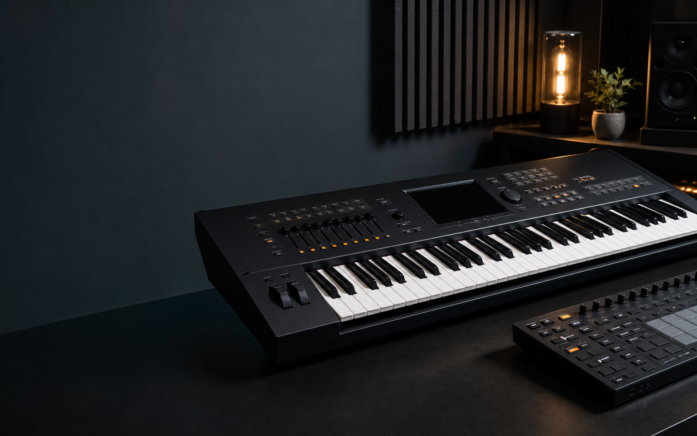

Build from scratch
Prototype editor
Program drum and accompaniment patterns on the original grid editor. Preview, save, and export a style.
Open the grid editorYamaha arranger style tools
Sketch patterns directly or bring in MIDI, then export with the mapping for your keyboard series.

Both tools keep PSR-E and PSR-SX600 sections, tracks, channels, and exports separate.
Build from scratch
Program drum and accompaniment patterns on the original grid editor. Preview, save, and export a style.
Open the grid editorBring your own MIDI
Route one MIDI channel into a section and target track, inspect its timeline, then export the finished style.
Open the sequence workspaceUse the prototype editor for new patterns. Use MIDI sequence when your arrangement already exists in a MIDI file.